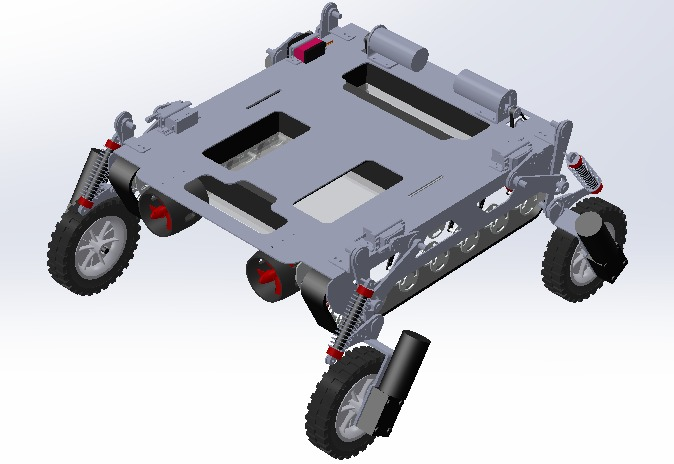
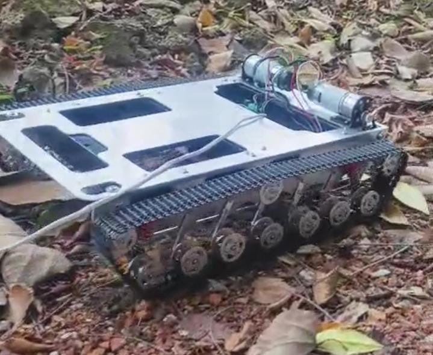

Amphibious Robot for Wildlife Exploration
A mobile robotic system designed for wildlife exploration capable of navigating ground terrains, shallow water, and aerial environments. The system enables remote monitoring without disturbing natural habitats.
Key Features
- Ground + aquatic mobility (tracks & thrusters)
- Detachable aerial drone for extended coverage
- Real-time video streaming & remote control
- Operates in muddy, sandy, and shallow water
Design & Engineering
- Tracked locomotion with suspension system
- Aluminum chassis (lightweight & strong)
- High torque motor selection
- Validated using ANSYS & ADAMS

